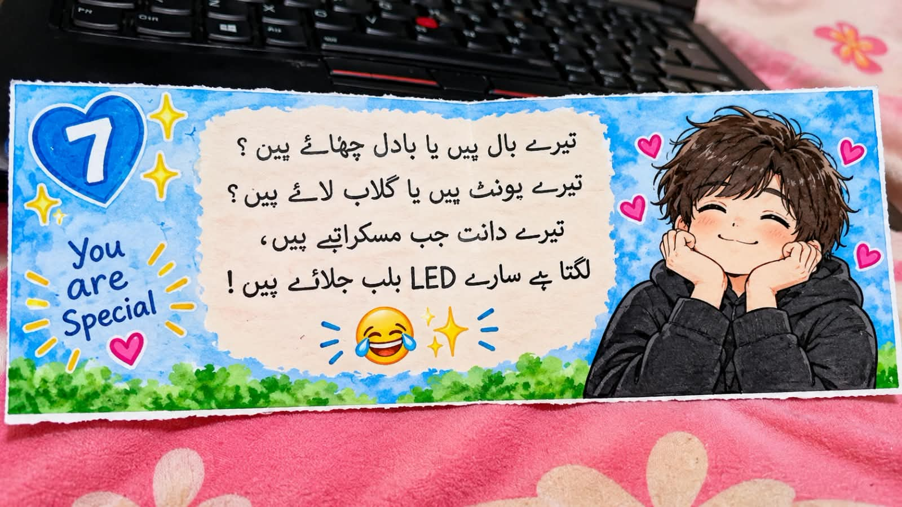
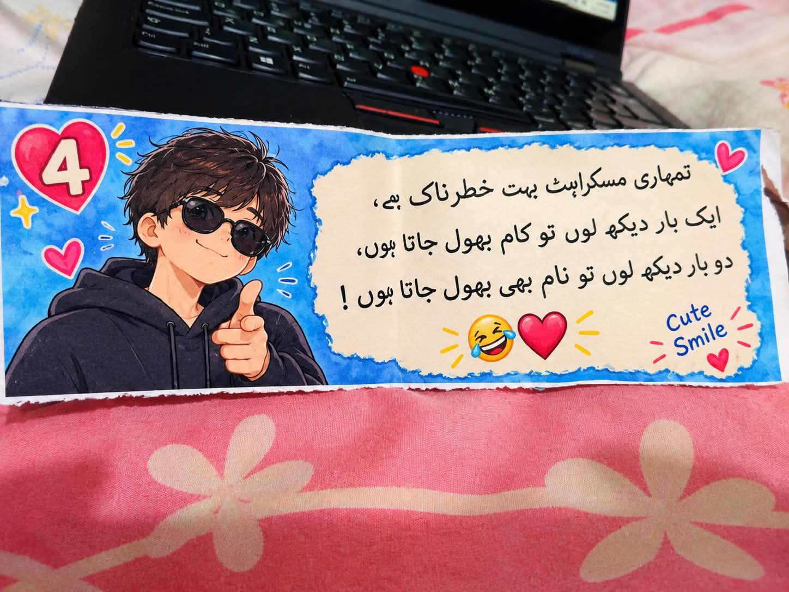
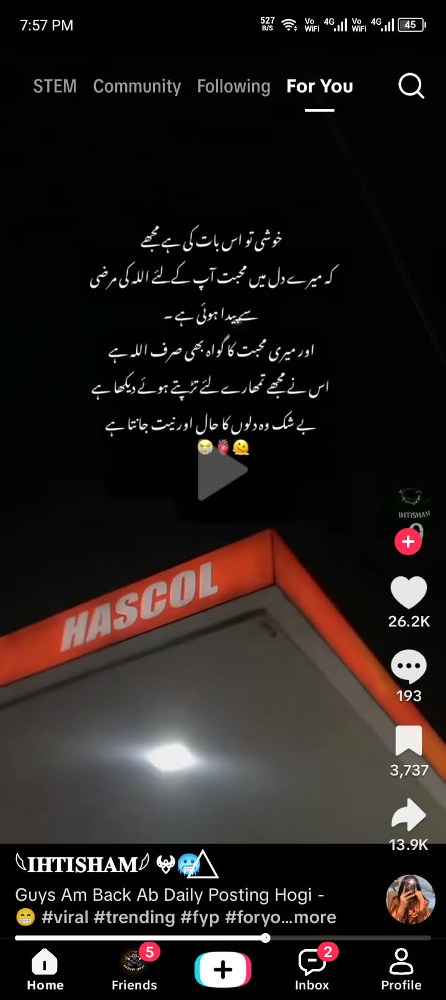
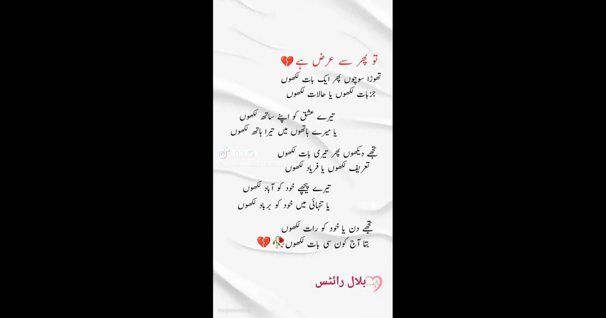

Some Beautiful Memories ❤️
First, a little collection for you 🥺🌹








A Little Message
🥺❤️ Yeh website dekhne ke baad aap mujhse baat karein ya na karein, 💔 Main aapko bas itna batana chahta hoon ke mujhe sirf aapse pyaar hua tha, hai aur hamesha rahega. 🥹❤️🌹 💞 Aap meri mohabbat hain, aur rahengi. 🫶🏻❤️
My Special Message 💌
Hello meri jaan! ❤️ Umeed karta hun aap hamesha khush rahen. Aap meri zindagi ka ek bohat special hissa hain. Main chahta hun ke aap hamesha muskurati rahen. Allah aapko hamesha khush rakhe. 🌹
Kabhi kabhi kuch feelings aisi hoti hain jinhein lafzon mein bayan karna mushkil hota hai. Lekin phir bhi dil chahta hai ke apni har baat aap tak pohanchao. 💗
🥹❤️ Jis din aapse baat ho jaye ya aapki meethi si awaaz sunne ko mil jaye, 🎧💞 toh yaqeen karein mera poora din khoobsurat ban jata hai. 🌸 Chahe din kitna hi bura kyun na guzra ho, aapki ek awaaz, aapka ek chhota sa message meri saari udaasi door kar deta hai. 🥺❤️ Pata nahi aapko iska ehsaas hai ya nahi, lekin aap mere liye sirf ek insaan nahi, balki meri khushi ki sabse khoobsurat wajah hain. 🫶🏻🌍 **Bas yunhi mujhse baat kar liya karein, kyun ke aapki awaaz sun kar mera dil sukoon mehsoos karta hai.** 🥹💗🌹
Agar is website ko reject kr do to neechy wala parhana otherwise na parhana! 🥺❤️
4,5 dafa ma na aap sa khawaab ma bhi baat ki ha
Ma umeed krta hun k aap ko yeah website achi lagi ho gi or mujhy yeah bhi umeed ha k kabhi kisi na kisi larki ko aaj sa pehly aysy purpose nahi kya ho ga. 🥰🌹 yeah website ma na apni mehnat sa especial aap k liya banai ha. 💻❤️ agar aap issay accept krna chaho to mujhay dukaan pr aa k bas itna bata dyna k accept. 🥺💗 keu k ma kaafi time sa aap sa baat krna chahta tha lakin nhi kr saka. 😅📚 ma roz kehta tha k aaj baat kru ga lakin yeah hi sochta rehta tha k kasy kru or kya baat krun. 😔📝 agar accept kya to woh baat bhi bata du ga.bas 5mint time da dyna. ❤️
or 1 advice ha yeah jo larka ha Ali Hussain jo aap ko tang krta tha mujhy pehly bhi maloom tha ma na aap sa bola bhi tha k baat sun lo 5mint lakin aap nhi maani. is sa ab jitna ho saka door raho or Subhaan sa bhi keu k us na aap k baary ma bohat gandi baat ki ha or mujhy us baat pr yaqqeen bhi nhi ha keu k aap aysa nhi kr sakti. 🤍🥺
زیر لگتا تھا اس کا کسی غیر سے بات کرنا پھر احساس ہوا کہ غیر تو میں بھی ہوں 😭 بہت اچھا تعلق رہا ہے تم سے ایک اچھی یاد ہو تم بہت کچھ کہنا تھا تم سے مگر اب آزاد ہو تم 🙂💔 Rabia
OR agar reject kro to aa kr bas 1 thappar laga dyna ta k ma kabhi aap sa baat na kru aisi 😅💔 or agar reject kro to ma aap ko mazeed nahi tang kru ga bas 1 sorry wala page likha hua ha woh da dun ga. 🥺 or agar reject kr dya to mujhy nhi umeed k is ko parhany k baad dukaan pr aao gi agar i bhi to ma aap sa just as a shopkeeper behave kru ga. 🤍 bas bata dyna. agar accept kr lo to ma samjhun ga mera aap k liya 3 raatyn jaagna baykaar nahi gya. 🌙❤️ ab yeah aap ki marzi ha accept ya reject. 🥹 1500 lines of code just for you. 💻❤️ 1 dot(.) na lagaany sa poory code ma error aa jata ha or 1 error khatam krna ma ghantun time lagta ha. lakin aap ko 1 mint laga ga soch lyna. 😅🥰
orr aap ko kisi bhi cheez ki zaroorat ho bas mujhy bata dyna chai woh cheez kitni hi choti ya kitni hi bari keu na ho (intentialy or finencialy). 🤝❤️ koi larka tang kra tab bhi bata dyna. aap k liya mari jaan bhi haazir ha. 🥺❤️ just for you. 🌹
Last ma 1 advice ha! jis tarah aap subah school jaaty huy dopata or mask lati ho usi tarah waapsi pr bhi lya kro or baar baar peechy na dykha kro peechay koi salaab nhi aa rha hota or agar salaab aa b gya to pata chal jay ga😅 or ma yeah sab apna liya nhi keh rha balky aap ki izzat or aap k papa or mama ki izzat ka hi thora sa khayaal kr lo. 🤍 aap 1 izzatdaar ghar ki bati ho thora sa khayaal kr lo. agar kabhi moqa mila to apni mama ya papa k pass beth kr pooch lyna k aap kya chahta han mera future kasa ho or 1 dafa apna aap ko bhi dakh lyna aap kya kr rhi ho or un ki soch kya ha.or agar kabhi time ho to 1 drama ha "Hurmat" woh thora sa dykh lyna bohat acha drama ha aap ko pata chal jay ga k keu aap ki mama,papa or bhai bahir nikanly sa mana krty han han or keu ma aap ko Hijaab ka kehta hun jis din aap ko pata chal gya na aap bohat pachtao gi.🌸
Or ma koshish kru ga k aap ki yeah pics delete kr du. But I think it,s not possible ma raat ko sona sa pehla 1 dafa dykhta hun phir aap k liya dua kr k sota hun. 🌙🤲❤️ or jab aap dukaan pr aati ho to mari dharkan bohat tezz ho jaati ha or koi baat yaad nhi rhti. ❤️🩹 jab waapis jaati ho to ma "aaytal kursi" parh kr dill ma aap ko Allah k hawaly krta hun. 🤲❤️ Agar ni yaqqeen to kasam la lo mujh sa. wasy ma kasam uthata nhi. 🥺
1 or baat jo aap k mind ma ho gi k sabzi waaly uncle ko maloom ha k ham baatyn krty ha to yeah jaan lo k unhen sirf yeah maloom ha k ham baat krty han yeah nhi k kya baatyn krty han,or haan unhen jab yeah maloom hua tha k ham baat krta han to woh mera papa ko batany lagy tha ma na kasy roka yeah ma jaanta hun. 🤐 or woh kisi ko yeah baat nhi batayn ga jis tarah Subhaan or ali hussain na batai or na hi ma kisi ko batao ga. 🤍
mera pehly din aap ko dykhna or aap ka name poochna ya koi bhi mari baat buri lagi ho agar possible hua to mujhy maaf kr dyna. 🥺🙏 I hope aap ko to yeah bhi nhi yaad ho ga k ma na pehli dafa aap ko kab or kidher dykha or pehli dafa aap sa kab baat ki. you are very very beautifull in Red or Ferozi colour dress.❤️ and I think aap ko to yeah bhi ni yaad ho ga k aap na ferozi dress pehli dafa kab pehni lakin mujhy yaad ha tab tak mari aap sa abhi koi baat nhi thi hui.
Umeed ha k yeah sab aap kisi ko nahi batao gi ma na ab apny dill ki baat kr di ha. 🤍🥹
🥺❤️ Ab shayad ma aap se koi baat nahi karun ga. Aap bhi agar baat nahi karna chahtin to ma aap ke faislay ki izzat karun ga. Waisy dil mein umeed to ab bhi hai ke shayad kabhi aap khud mujh se baat kar lein. 🤍
Or rahi baat jo aap Ahmed se keh rahi thi ke ma aap ki picture social media par upload karun ga, to shayad aap ne mujhy ghalat samjha hai. 🥺 Ma aap ko yaqeen dilana chahta hun ke ma kabhi bhi aap ki picture kahin upload nahi karun ga. Ma jaanta hun ke ye aap ki izzat aur privacy ka maamla hai, aur ma is cheez ki dil se izzat karta hun. Aap mujh se baat karein ya na karein, ma kabhi aisa soch bhi nahi sakta. Aap ne apni picture ke hawalay se jo bhi socha hai, please us ki wajah se pareshan na hon. Ma ne pehle bhi kaha tha ke aap ko dikha kar picture delete kar dun ga. ❤️
*تیری تصویر سے 1 گلہ ہے مجھے* *یہ مجھ سے بات کیوں نہیں کرتی۔*
Or haan, agar aap apne bhai ko batana chaho to bata sakti ho mere baare mein ke ma aap ko tang karta hun, lekin us sa pehle ek dafa mujhy bata dena please. 🥺🙏 Or Ahmed bata raha tha ke aap mujhy gaaliyan deti ho, to koi baat nahi, it's your right. 😔 Aap ki nazar mein ma bohat bura hun. It's okay. 💔
Ab ma bhi koshish karun ga ke aap ko ek khwaab samajh kar bhool jaun, but I think it's not possible. 🥺💭❤️🩹
Aap sa baat kiya mujhy Aaj 5 din ho gay jab ma yeah Baat likh rha hun or ab to Mera mar jany ki dill kr rha ha.Shayad ma aap sa doobara na Milun.
Sorry in Advance for everything. 🥺🤍💓😮💨😢
Agar aap ko kisi bhi kisam ki Website ya Mobile ki koi personal Application banwaani ho to bata dyna. 💻📱 wasy to ma is k kaafi heavy charges lyta hun lakin aap k liya "Free of cost" kaam kru ga. ❤️🥰 or sab sa mushkil is tarah jasy yeah website live ki ha google sa permision la kr woh bhi kr dun ga. 🥀❤️✨
Birthday wish website 🎂🎉, invitation website 💌💍 etc... or any Application. 📱❤️
💔 اُس نے کہا تھا کہ عشق ایک ڈھونگ ہے... میں نے کہا: تجھے عشق ہو، خدا کرے! ❤️🥀 پھر کوئی تجھے اُس سے جدا کرے۔ 💔 تو اُسے تسبیحوں میں پڑھا کرے، 🤲 تو اُسی کا نام جَپا کرے۔ ❤️ تو گلی گلی پھرا کرے، 🥺 پھر میں کہوں کہ عشق ایک ڈھونگ ہے، اور تُو نہیں، نہیں کہا کرے۔ 🥺💔🌹
agar comfortable ho to mery letter waapis kr dyna jo aap na I think Ahmed ki sister k pass rakhy huy han yeah na ho k us k ghar waly bhi daykh layn.
Mujhy sirf App sa pyaar hua tha, Ha and Insha Allah will be remaining. ❤️🥀 kisi ko pata chaly ya na chaly mujhy koi issue nhi. 🤍 And I am ready to Altar my life for you. if you said.🥺❤️
Ma aap k jawaab ka intizaar kru ga kal tak.ma aap ko force nhi kru ga bas bata dyna or agar na bataya to ma inkaar hi samjhu ga. ⏳🥹❤️
Kaash k aap mujhy 5mint time da do
I Love You ❤️💗🥰🌹 for Always.
By, see you later.
*حضور فرمانے لگے!* *جب تم کسی سے محبت کرو* *تو اسے بتا کہ میں تم سے* *محبت کرتا ہوںMera kaam tha Batana ma na Bata dya ha ab aagy aap ki marzi mujhy bas jawaab da dyna.
آپ ہمیشہ خوش رہیں اور اللہ آپ کی زندگی میں برکت عطا فرمائے۔ ❤️